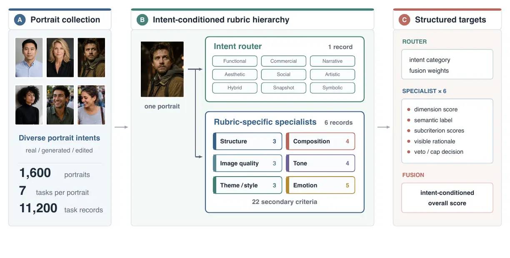
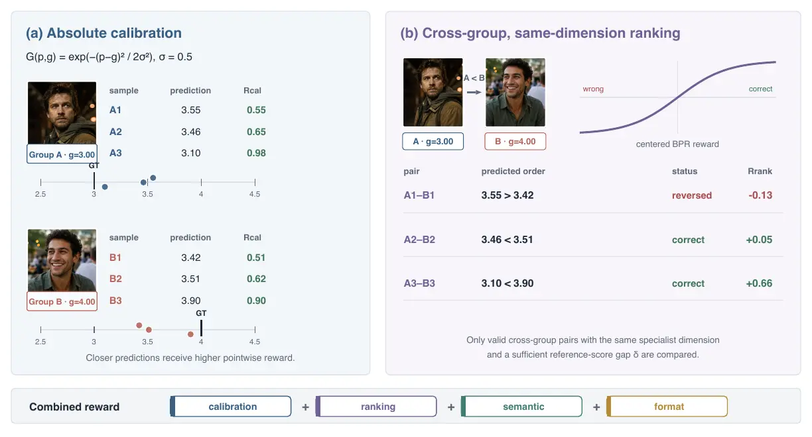
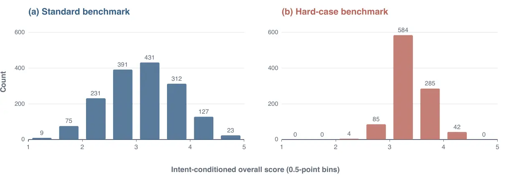
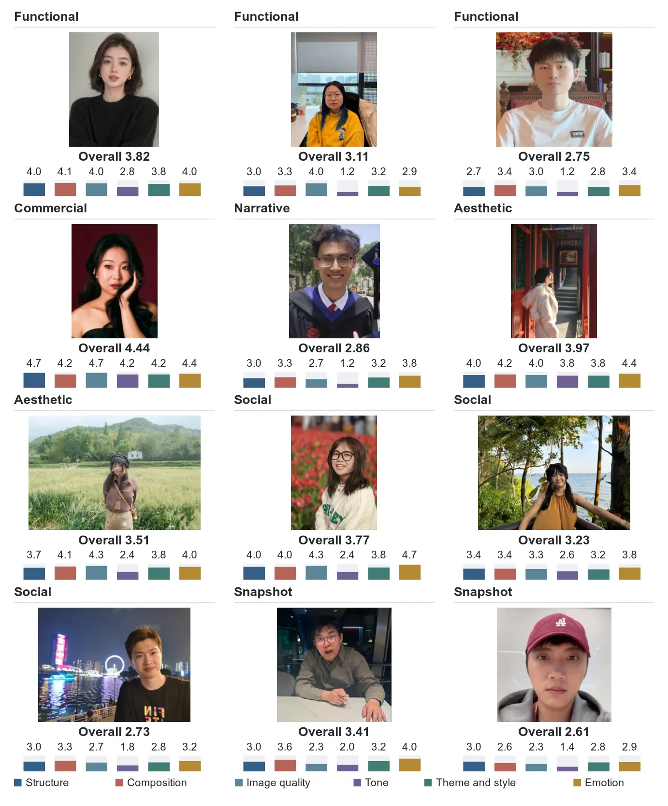

One score hides the cause
A holistic rating cannot show whether a weakness comes from structure, composition, image quality, tone, theme and style, or emotion.
Project page · 2026

Overview
Portrait aesthetic assessment asks how effectively a human-centered image fulfills its photographic intent. The same blur, pose, lighting, or framing choice may serve one intent but undermine another, yet existing methods usually predict a single score or omit intent altogether.
PortraitAes-Bench provides expert-authored rubrics for nine intents, six first-level dimensions, and 22 secondary criteria. Its router–specialist–fusion workflow yields structured scores, semantic labels, visible-evidence rationales, and intent-conditioned overall ratings. Trained with the same seven-task structure, PortraitAes combines multi-task supervision, Gaussian score calibration, and within-dimension cross-image ranking. It reaches 0.924 PLCC / 0.934 SRCC on the standard benchmark and 0.829 / 0.795 on the hard-case set.
Why it matters
Portraits may be functional, commercial, documentary, social, or artistic. Useful assessment must identify the photographic context, inspect visible evidence under explicit criteria, and preserve ordering across images.
A holistic rating cannot show whether a weakness comes from structure, composition, image quality, tone, theme and style, or emotion.
Technical cleanliness may be essential for a functional portrait, while blur or unconventional framing can support a narrative or artistic one.
Accurate pointwise scores do not guarantee the correct order between visually close portraits. The model must learn both.
PortraitAes-Bench
The benchmark contains 1.6K portraits expanded into seven linked tasks per image: one intent router and six dimension specialists. Each record keeps the intermediate evidence needed for task-specific evaluation and auditable score fusion.
PortraitAes
PortraitAes adapts Qwen3.5-VL-9B through a two-stage procedure. Multi-task SFT learns the router and six rubric-specific specialists; rank-aligned optimization then refines numerical calibration and cross-image order while preserving semantic and format constraints.

10,286 training images yield approximately 72K examples across intent routing and six specialist tasks. LoRA is applied to the language backbone while the visual encoder and aligner remain frozen.
A Gaussian reward scores numerical distance for both the primary dimension score and its evidence-bearing subcriteria.
Valid cross-group examples are compared only within the same specialist dimension and only when their reference-score gap defines a reliable order.
Semantic and format rewards preserve rubric-compatible labels and parseable records; router outputs use intent-category and fusion-weight rewards.
Experiments
Evaluation uses PLCC for score calibration and SRCC for ordinal consistency. The standard benchmark contains 1.6K images / 11K task examples; the held-out hard-case set contains 1K images / 7K task examples with a deliberately compressed score range.
| Model | Standard | Hard |
|---|---|---|
| Qwen3.5-VL-9B | 0.857 / 0.874 | 0.649 / 0.629 |
| Qwen3.5 Flash | 0.804 / 0.763 | 0.615 / 0.635 |
| ArtiMuse | 0.785 / 0.804 | 0.501 / 0.495 |
| Q-Align | 0.707 / 0.724 | 0.374 / 0.348 |
| UniPercept | 0.703 / 0.729 | 0.352 / 0.358 |
| PortraitCraft-4B | 0.652 / 0.785 | 0.406 / 0.400 |
| InternVL3-8B | 0.607 / 0.668 | 0.210 / 0.215 |
| HumanAesExpert-8B | 0.457 / 0.499 | 0.127 / 0.154 |
| PortraitAes (Ours) | 0.924 / 0.934 | 0.829 / 0.795 |

Qualitative examples
PortraitAes predicts an intent, six specialist scores, and dimension-level explanations grounded in visible evidence. The examples below show both high- and low-scoring portraits without collapsing their differences into one opaque number.
